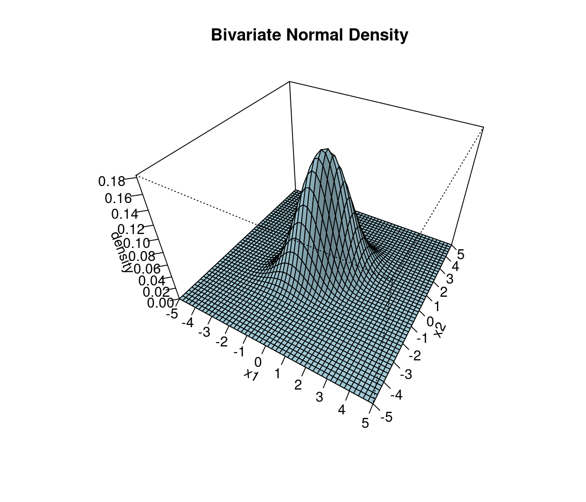

1 Multivariate random variables
1.1 Why multivariate statistics?
Science uses experiments to verify hypotheses about the world. Statistics provides tools to quantify this procedure and offers methods to link data (experiments) with probabilistic models (hyptheses). Since the world is complex we need complex models and complex data, hence the need for multivariate statistics and machine learning.
Specifically, multivariate statistics (as opposed to univariate statistics) is concerned with methods and models for random vectors and random matrices, rather than just random univariate (scalar) variables. Therefore, in multivariate statistics we will frequently make use of matrix notation.
Closely related to multivariate statistics (traditionally a subfield of statistics) is machine learning (ML) which is traditionally a subfield of computer science. ML used to focus more on on algorithms rather on probabilistic modeling but nowadays most machine learning methods are fully based on statistical multivariate approaches, so the two fields are converging.
Learning multivariate models allows us to learn dependencies and interactions among the components of the random variables which in turns allows to draw conclusion about the world.
Two main tasks:
- unsupervised learning (finding structure, clustering)
- supervised learning (training from labeled data, followed by prediction)
Challenges:
- complexity of model needs to be appropriate for problem and available data,
- high dimensions make estimation and inference difficult
- computational issues.
1.2 Basics
1.2.1 Univariate vs. multivariate random variables
Univariate random variable (dimension \(d=1\)): \[x \sim F\] where \(x\) is a scalar and \(F\) is the distribution. \(\text{E}(x) = \mu\) denotes the mean and \(\text{Var}(x) = \sigma^2\) the variance of \(x\).
Multivariate random vector of dimension \(d\): \[\boldsymbol x= (x_1, x_2,...,x_d)^T \sim F\]
\(\boldsymbol x\) is vector valued random variable.
The vector \(\boldsymbol x\) is column vector (=matrix of size \(d \times 1\)). Its components \(x_1, x_2,...,x_d\) are univariate random variables. The dimension \(d\) is also often denoted by \(p\) or \(q\).
1.2.2 Mean of a random vector
The mean / expectation of a random vector with dimensions \(d\) is also a vector with dimensions \(d\): \[\text{E}(\boldsymbol x) = \boldsymbol \mu= \begin{pmatrix} \text{E}(x_1) \\ \text{E}(x_2) \\ \vdots \\ \text{E}(x_d) \end{pmatrix} = \left( \begin{array}{l} \mu_1 \\ \mu_2 \\ \vdots \\ \mu_d \end{array}\right)\]
1.2.3 Variance of a random vector
Recall the efinition of variance for a univariate random variable:
\[\text{Var}(x) = \text{E}\left( (x-\text{E}(x))^2 \right) = \text{E}\left((x-\mu)^2 \right)=\text{E}\left( (x-\mu)(x-\mu) \right) = \text{E}(x^2)-\mu^2\]
Definition of variance of a random vector:
\[\text{Var}(\boldsymbol x) = \text{E}\left(\underbrace{(\boldsymbol x-\boldsymbol \mu)}_{d\times 1} \underbrace{(\boldsymbol x-\boldsymbol \mu)^T}_{1\times d}\right) = \underbrace{\boldsymbol \Sigma}_{d\times d} = \text{E}(\boldsymbol x\boldsymbol x^T)-\boldsymbol \mu\boldsymbol \mu^T\]
The variance of a random vector is, therefore, not a vector but a matrix!
\[\boldsymbol \Sigma= (\sigma_{ij}) = \begin{pmatrix} \sigma_{11} & \dots & \sigma_{1d}\\ \vdots & \ddots & \vdots \\ \sigma_{d1} & \dots & \sigma_{dd} \end{pmatrix}\]
This matrix is called the Covariance Matrix, with off-diagonal elements \(\sigma_{ij}= \text{Cov}(x_i,x_j)\) and the diagonal \(\sigma_{ii}= \text{Var}(X_i) = \sigma_i^2\).
1.2.4 Properties of the covariance matrix
- \(\boldsymbol \Sigma\) is real valued: \(\sigma_{ij} \in \mathbb{R}\)
- \(\boldsymbol \Sigma\) is symmetric: \(\sigma_{ij} = \sigma_{ji}\)
- The diagonal of \(\boldsymbol \Sigma\) contains \(\sigma_{ii} = \text{Var}(x_i) = \sigma_i^2\), i.e. the variances of the components of \(\boldsymbol x\).
- Off-diagonal elements \(\sigma_{ij} = \text{Cov}(x_i,x_j)\) represent linear dependencies among the \(x_i\). \(\Longrightarrow\) linear regression, correlation
How many entries does the \(\boldsymbol \Sigma\) matrix have?
\[\boldsymbol \Sigma= (\sigma_{ij}) = \underbrace{\begin{pmatrix} \sigma_{11} & \dots & \sigma_{1d}\\ \vdots & \ddots & \vdots \\ \sigma_{d1} & \dots & \sigma_{dd} \end{pmatrix}}_{d\times d}\]
Number of entries: \(\frac{d(d+1)}{2}\), which grows with square of dimension \(d\), i.e. is of order O(\(d^2\)).
| \(d\) | # entries |
|---|---|
| 1 | 1 |
| 10 | 55 |
| 100 | 5050 |
| 1000 | 500500 |
| 10000 | 50005000 |
For large dimension \(d\) the covariance matrix has many components!
–> computationally expensive (both for storage and in handling) –> very challenging to estimate in high dimensions \(d\).
Note: matrix inversion requires O(\(d^3\)) operations! So, computing \(\boldsymbol \Sigma^{-1}\) is difficult for large \(d\)!
1.2.5 Eigenvalue decomposition of \(\boldsymbol \Sigma\)
Theorem from matrix theory / linear algebra: A symmetric matrix with real entries has real eigenvalues.
Thus, the eigenvalues of \(\boldsymbol \Sigma\) must be real. However, for covariance matrices this can be clarified further:
Assume that \(\boldsymbol \Sigma= \boldsymbol U\boldsymbol \Lambda\boldsymbol U^T\) is the eigenvalue decomposition of the covariance matrix \(\boldsymbol \Sigma\) with \(\boldsymbol U\) an orthogonal matrix containing the eigenvectors (eigensystem) and \(\boldsymbol \Lambda\) is the diagonal matrix containing eigenvalues: \[\boldsymbol \Lambda= \begin{pmatrix} \lambda_{1} & \dots & 0\\ \vdots & \ddots & \vdots \\ 0 & \dots & \lambda_{d} \end{pmatrix}\] Assume that \(\boldsymbol x\) is a random vector with covariance \(\text{Var}(\boldsymbol x) = \boldsymbol \Sigma\). Then \(\text{Var}(\boldsymbol U^T \boldsymbol x) = \boldsymbol U^T \boldsymbol \Sigma\boldsymbol U= \boldsymbol \Lambda\). Since the variance is always positive or zero the eigenvalues \(\lambda_i\) of a the covariance matrix \(\boldsymbol \Sigma\) cannot be negative. Hence, \(\boldsymbol \Sigma\) is positive semidefinite.
In fact, unless there is collinearity ( i.e. a variable is a linear function the other variables) all eigenvalues will be positive and \(\boldsymbol \Sigma\) is positive definite.
1.3 Multivariate normal distribution
The multivariate normal model is a generalisation of the univariate normal distribution from dimension 1 to dimension \(d\).
1.3.1 Univariate normal distribution:
\[\text{Dimension } d = 1\] \[x \sim N(\mu, \sigma^2)\] \[\text{E}(x) = \mu \space , \space \text{Var}(x) = \sigma^2\]
Density:
\[f(x |\mu, \sigma^2) = \frac{1}{\sqrt{2\pi\sigma^2}} \exp\left( -\frac{(x-\mu)^2}{2\sigma^2} \right) \]
Plot of univariate normal density :
- Unimodal with peak at \(\mu\), the width is determined by \(\sigma\) (in this plot: \(\mu=2, \sigma=1\) )

Special case: standard normal with \(\mu=0\) and \(\sigma^2=1\):
\[f(x |\mu=0,\sigma^2=1)=\frac{1}{\sqrt{2\pi}} \exp\left( {-\frac{x^2}{2}} \right) \]
Maximum entropy characterisation: the normal distribution is the unique distribution that has the highest (differential) entropy over all continuous distributions with support from minus infinity to plus infinity with a given mean and variance.
This is in fact one of the reasons why the normal distribution is so important (und useful) – if we only know that a random variable has a mean and variance, and not much else, then using the normal distribution will be a reasonable and well justified working assumption!
1.3.2 Multivariate normal model
\[\text{Dimension } d\] \[\boldsymbol x\sim N_d(\boldsymbol \mu, \boldsymbol \Sigma)\] \[\boldsymbol x\sim \text{MVN}(\boldsymbol \mu,\boldsymbol \Sigma) \] \[\text{E}(\boldsymbol x) = \boldsymbol \mu\space , \space \text{Var}(\boldsymbol x) = \boldsymbol \Sigma\]
Density:
\[f(\boldsymbol x| \boldsymbol \mu, \boldsymbol \Sigma) = (2\pi)^{-\frac{d}{2}} \det(\boldsymbol \Sigma)^{-\frac{1}{2}} \exp\left({{-\frac{1}{2}} \underbrace{\underbrace{(\boldsymbol x-\boldsymbol \mu)^T}_{1 \times d} \underbrace{\boldsymbol \Sigma^{-1}}_{d \times d} \underbrace{(\boldsymbol x-\boldsymbol \mu)}_{d \times 1} }_{1 \times 1 = \text{scalar!}}}\right)\]
- note that density contains precision matrix \(\boldsymbol \Sigma^{-1}\)
- inverting \(\boldsymbol \Sigma\) implies inverting the eigenvalues \(\lambda_i\) of \(\boldsymbol \Sigma\) (thus we need \(\lambda_i > 0\))
- density also contains \(\det(\boldsymbol \Sigma) = \prod\limits_{i=1}^d \lambda_i\) \(\equiv\) product of eigenvalues of \(\boldsymbol \Sigma\)
Special case: standard multivariate normal with \[\boldsymbol \mu=\boldsymbol 0, \boldsymbol \Sigma=\boldsymbol I=\begin{pmatrix} 1 & \dots & 0\\ \vdots & \ddots & \vdots \\ 0 & \dots & 1 \end{pmatrix}\]
\[f(\boldsymbol x| \boldsymbol \mu=\boldsymbol 0,\boldsymbol \Sigma=\boldsymbol I)=(2\pi)^{-d/2}\exp\left( -\frac{1}{2} \boldsymbol x^T \boldsymbol x\right) = \prod\limits_{i=1}^d \frac{1}{\sqrt{2\pi}} \exp\left(-\frac{x_i^2}{2}\right)\] which is equivalent to the product of \(d\) univariate standard normals!
Misc:
- for \(d=1\), multivariate normal reduces to normal.
- for \(\boldsymbol \Sigma\) diagonal (i.e. \(\boldsymbol P= \boldsymbol I\), no correlation), MVN is the product of univariate normals (see Example Sheet 1).
Plot of MVN density:

- Location: \(\boldsymbol \mu\)
- Shape: \(\boldsymbol \Sigma\)
- Unimodal: one peak
- Support from \(-\infty\) to \(+\infty\) in each dimension
1.3.3 Shape of the contours depend on the eigenvalues of \(\boldsymbol \Sigma\):
Case 1: No Correlation / Diagonal / Isotropic / Spherical Covariance \(\Sigma = \begin{pmatrix} 1 & 0 \\ 0 & 1 \end{pmatrix}\) with \(\sqrt{\lambda_1/ \lambda_2} = 1\):

Case 2: with correlation \(\Sigma = \begin{pmatrix} 1 & 0.8 \\ 0.8 & 1 \end{pmatrix}\) with \(\sqrt{\lambda_1 / \lambda_2} =3\):

For an explanation why the contour lines of the multivariate normal always assume the shape of an ellipse see Example sheet 2!
1.4 Discrete multivariate distributions
Most univariate distributions have multivariate counterparts. Here are some of the most important ones. First we discuss discrete distributions, then later furhter continuous distributions
1.4.1 Categorical distribution
1.4.1.1 Univariate case
Bernoulli distribution (=coin tossing model)
\[x \sim \text{Ber}(\pi)\] \[ x \in \{0,1\}\] \[\pi \in [0,1]\] \[\text{Pr}(x=1) = \pi\] \[\text{Pr}(x=0)= 1-\pi\] \[\text{E}(x) = \pi\] \[\text{Var}(x)=\pi(1-\pi)\]
1.4.1.2 Multivariate case
\[\boldsymbol x\sim \text{Categ}(\boldsymbol \pi) \] \[\boldsymbol x= (x_1,...,x_d)^T; \, x_i \in \{0,1\}; \, \sum^{d}_{i=1}x_i = 1\] \[\boldsymbol \pi= (\pi_1,...,\pi_d)^T; \, \sum^{d}_{i=1}\pi_i = 1\] \[\text{Pr}(x_i=1) = \pi_i\] \[\text{Pr}(x_i=0)= 1-\pi_i\]
\[\text{E}(\boldsymbol x) = \boldsymbol \pi\] \[\text{Var}(x_i)=\pi_i(1-\pi_i)\] \[\text{Cov}(x_i,x_j)=-\pi_i\pi_j\]
1.4.2 Multinomial distribution
1.4.2.1 Univariate case
Binomial Distribution
Repeat Bernoulli experiment \(r\) times
\[x \sim \text{Binom}(\pi,r)\] \[ x \in \{0,...,r\}\] \[\text{E}(x) = r \, \pi\] \[\text{Var}(x)=r \, \pi(1-\pi)\]
Standardised to unit interval: \[\frac{x}{r} \in \left\{0,\frac{1}{r},...,1\right\}\] \[\text{E}\left(\frac{x}{r}\right) = \pi\] \[\text{Var}\left(\frac{x}{r}\right)=\frac{\pi(1-\pi)}{r}\]
\[\textbf{Urn model:}\]
distribute \(r\) balls into two bins

1.4.2.2 Multivariate case
Multinomial distribution
Draw \(r\) times from categorical distribution
\[\boldsymbol x\sim Multinom(\boldsymbol \pi,r) \] \[ x_i \in \{0,1,...,r\}; \, \sum^{d}_{i=1}x_i = r\] \[\text{E}(\boldsymbol x) = r \,\boldsymbol \pi\] \[\text{Var}(x_i)=r\, \pi_i(1-\pi_i)\] \[\text{Cov}(x_i,x_j)=-r\, \pi_i\pi_j\]
Standardised to unit interval: \[\frac{x_i}{r} \in \left\{0,\frac{1}{r},\frac{2}{r},...,1\right\}\] \[\text{E}\left(\frac{\boldsymbol x}{r}\right) = \boldsymbol \pi\] \[\text{Var}\left(\frac{x_i}{r}\right)=\frac{\pi_i(1-\pi_i)}{r}\] \[\text{Cov}\left(\frac{x_i}{r},\frac{x_j}{r}\right)=-\frac{\pi_i\pi_j}{r} \] \[\textbf{Urn model:}\]
distribute \(r\) balls into \(d\) bins

1.5 Continuous multivariate distributions
1.5.1 Dirichlet distribution
1.5.1.1 Univariate case
Beta distribution
\[x \sim \text{Beta}(\alpha,\beta)\] \[x \in [0,1]\] \[\alpha > 0; \beta > 0\] \[m = \alpha + \beta \] \[\mu = \frac{\alpha}{m} \in \left[0,1\right]\] \[\text{E}(x) = \mu\] \[\text{Var}(x)=\frac{\mu(1-\mu)}{m+1}\] \(\text{compare with unit standardised binomial!}\)
\(\textbf{Different shapes}\)

\[\text{Useful as distribution for a proportion } \pi\]
\[ \text{ Bayesian Model:}\]
\[\text{Beta prior:} \; \pi \sim Beta(\alpha,\beta)\]
\[\text{Binomial likelihood:} \; x|\pi \sim Binom\]
1.5.1.2 Multivariate case
Dirichlet distribution
\[\boldsymbol x\sim \text{Dirichlet}(\boldsymbol \alpha)\] \[x_i \in [0,1]; \, \sum^{d}_{i=1} x_i = 1\] \[\boldsymbol \alpha= (\alpha_1,...,\alpha_d)^T >0\] \[m = \sum^{d}_{i=1}\alpha_i\] \[\mu_i = \frac{\alpha_i}{m} \in \left[0,1\right]\] \[\text{E}(x_i) = \mu_i\] \[\text{Var}(x_i)=\frac{\mu_i(1-\mu_i)}{m+1}\] \[\text{Cov}(x_i,x_j)=-\frac{\mu_i \mu_j}{m+1}\] \(\text{compare with unit standardised multinomial!}\)
Stick breaking" model

\[\text{Useful as distribution for a proportion } \boldsymbol \pi\]
\[\text{ Bayesian Model:}\]
\[\text{Dirichlet prior:} \, \boldsymbol \pi\sim Dirichlet(\boldsymbol \alpha)\]
\[\text{Multinomial likelihood:} \, \boldsymbol x|\boldsymbol \pi\sim Multinom\]
1.5.2 Wishart distribution
This is a distribution for the sum of squared normally distributed random variables.
1.5.2.1 Univariate case
Scaled \(\chi^2\) distribution
\[z_1,z_2,\ldots,z_m \stackrel{\text{iid}}\sim N(0,\sigma^2)\] \[x = \sum^{m}_{i=1}z_i^2\]
\[x \sim \sigma^2 \chi^2_m = \text{W}_1(\sigma^2, m)\] \[\text{E}(x) = m \, \sigma^2\] \[\text{Var}(x)= m \, 2 \sigma^4\]
Useful as the distribution of sample variance: \[y_1, \ldots, y_n \sim N(\mu, \sigma^2)\] Known mean \(\mu\) \[\frac{1}{k}\sum_{i=1}^n(y_i -\mu)^2 \sim \text{W}_1\left(\frac{\sigma^2}{k}, n\right)\] Unknown mean \(\mu\) \[\frac{1}{k}\sum_{i=1}^n(y_i -\bar{y})^2 \sim \text{W}_1\left(\frac{\sigma^2}{k}, n-1\right)\]
1.5.2.2 Multivariate case
Wishart distribution
\[\boldsymbol z_1,\boldsymbol z_2,\ldots,\boldsymbol z_m \stackrel{\text{iid}}\sim N_d(0,\boldsymbol \Sigma)\]
\[\underbrace{\boldsymbol X}_{d\times d}=\sum^{m}_{i=1}\underbrace{\boldsymbol z_i\boldsymbol z_i^T}_{d\times d}\]
Note that \(\boldsymbol X\) is a !
\[\boldsymbol X\sim \text{W}_d\left(\boldsymbol \Sigma, m\right)\] \[\text{E}(\boldsymbol X) = m \boldsymbol \Sigma\] \[\text{Var}(x_{ij})=m \, \left(\sigma^2_{ij}+\sigma_{ii}\sigma_{jj}\right)\]
Useful as distribution of sample covariance: \[\boldsymbol y_1, \ldots, \boldsymbol y_n \sim N_d(\boldsymbol \mu, \boldsymbol \Sigma)\] \[\frac{1}{k}\sum_{i=1}^n (\boldsymbol y_i -\boldsymbol \mu)(\boldsymbol y_i -\boldsymbol \mu)^T \sim \text{W}_d\left(\boldsymbol \Sigma/k, n\right)\] \[\frac{1}{k}\sum_{i=1}^n (\boldsymbol y_i -\bar{\boldsymbol y})(\boldsymbol y_i -\bar{\boldsymbol y})^T \sim \text{W}_d\left(\boldsymbol \Sigma/k, n-1\right)\]
1.5.2.3 Relationship to Gamma distribution
The scaled \(\chi^2\) distribution (=one-dimensional Wishart distribution) with parameters \(\sigma^2\) and \(m\) is in fact a reparameterised Gamma distribution with shape parameter \(\alpha\) and scale parameter \(\beta\):
\[\text{Gamma}\left( \underbrace{\frac{m}{2}}_{\text{shape} } \, , \underbrace{ 2 \sigma^{2}}_{\text{scale}} \right)= \sigma^2\chi^2_m = \text{W}_1(\sigma^2, m)\]
or, equivalently (\(m = 2 \alpha\), \(\sigma^2 = \beta/2\)) \[\text{Gamma}\left( \underbrace{\alpha}_{\text{shape} } \, , \underbrace{\beta}_{\text{scale}} \right) = \frac{\beta}{2} \chi^2_{2 \alpha} = \text{W}_1(\frac{\beta}{2}, 2 \alpha)\]
The mean of the Gamma distribution is \(\text{E}(x) = \alpha \beta = \mu\) and the variance is \(\text{Var}(x) = \alpha \beta^2 = \mu^2/\alpha\).
The exponential distribution with rate parameter \(\lambda\) is a special case of the Gamma distribution with \(\alpha=1\): \[ \text{Exp}(\lambda) = \text{Gamma}(1, \frac{1}{\lambda}) = \frac{1}{2\lambda} \chi^2_{2} = \text{W}_1(\frac{1}{2 \lambda}, 2 ) \] The corresponding mean is \(1/\lambda=\mu\) and variance \(1/\lambda^2=\mu^2\).
1.5.3 Inverse Wishart distribution
1.5.3.1 Univariate case
Inverse \(\chi^2\) Distribution
\[x \sim \text{W}^{-1}_1(\psi, k+2) = \psi\,\text{ Inv-}\chi^2_{k+2} \] \[\text{E}(x) = \frac{\psi}{k}\] \[\text{Var}(x)= \frac{2\psi^2}{k^2 (k-2)}\]
Relationship to scaled \(\chi^2\) : \[ \frac{1}{x} \sim W_1(\psi^{-1}, k+2) = \psi^{-1} \, \chi^2_{k+2} \]
1.5.3.2 Multivariate case
Inverse Wishart distribution
\[\underbrace{\boldsymbol X}_{d\times d} \sim \text{W}^{-1}_d\left( \underbrace{\boldsymbol \Psi}_{d\times d} \, , \, k+d+1\right)\] \[\text{E}(\boldsymbol X) =\boldsymbol \Psi/ k\] \[\text{Var}(x_{ij})= \frac{2 }{k^2 (k-2)} \frac{(k+2) \psi_{ij} + k \, \psi_{ii} \psi_{jj} }{2 k + 2}\]
Relationship to Wishart: \[\boldsymbol X^{-1} \sim \text{W}_d\left( \boldsymbol \Psi^{-1} \, , k+d+1\right)\]
1.5.3.3 Relationship to inverse Gamma distribution
Another way to express the univariate inverse Wishart distribution is via the inverse Gamma distribution: \[IG(\underbrace{1+\frac{k}{2}}_{\text{shape } \alpha}, \underbrace{\frac{\psi}{2}}_{\text{scale }\beta}) = \psi\,\text{ Inv-}\chi^2_{k+2} = \text{W}^{-1}_1(\psi, k+2) \] or equivalently (\(k=2(\alpha-1)\) and \(\psi=2\beta\)) \[IG( \alpha, \beta) = 2\beta\,\text{ Inv-}\chi^2_{2\alpha} = \text{W}^{-1}_1(2 \beta, 2 \alpha) \] The mean of the inverse Gamma distribution is \(\text{E}(x) = \frac{\beta}{\alpha-1} = \mu\) the variance \(\text{Var}(x)= \frac{\beta^2}{(\alpha-1)^2(\alpha-2)} = \frac{2 \mu^2}{k-2}\).
The inverse of \(x\) is Gamma distributed: \[ \frac{1}{x} \sim \text{Gamma}(1+\frac{k}{2}, 2\psi^{-1})=\text{Gamma}(\alpha, \beta^{-1}) \]
The inverse Wishart distribution is useful as conjugate distribution for Bayesian modelling of the variance, with \(k\) the sample size parameter and \(\Psi = k \Sigma\) (or \(\psi = k \sigma^2\)).
1.5.4 Further distributions
https://en.wikipedia.org/wiki/List_of_probability_distributions
Wikipedia is a quite good source for information on distributions!
1.6 Estimation in large sample and small sample settings
We focus on the multivariate normal model in this chapter.
1.6.1 Data matrix
Observations from a multivariate normal are vectors: \[\boldsymbol x_1,\boldsymbol x_2,...,\boldsymbol x_n \stackrel{\text{iid}}\sim N_d\left(\boldsymbol \mu,\boldsymbol \Sigma\right)\] Data matrix (statistics convention):
Each line of the matrix is a transposed vector \(\boldsymbol x_k^T\).
Thus: \[\boldsymbol X= (\boldsymbol x_1,\boldsymbol x_2,...,\boldsymbol x_n)^T = \begin{pmatrix} x_{11} & x_{12} & \dots & x_{1d} \\ x_{21} & x_{22} & \dots & x_{2d} \\ \vdots \\ x_{n1} & x_{n2} & \dots & x_{nd} \end{pmatrix}\]
with \[\boldsymbol x_1=\begin{pmatrix} x_{11} \\ \vdots \\ x_{1d} \end{pmatrix} , \space \boldsymbol x_2=\begin{pmatrix} x_{21} \\ \vdots \\ x_{2d} \end{pmatrix} , \ldots , \boldsymbol x_n=\begin{pmatrix} x_{n1} \\ \vdots \\ x_{nd} \end{pmatrix}\]
Thus, in statistics the first index runs over \((1,...,n)\) and denotes the samples while the second index runs over \((1,...,d)\) and refers to the variables.
The convention on data matrices that variables are in columns while samples are in rows. is not universal! In fact it’s the other way around in machine learning (where samples are stored in columns and variables in rows). However, some machine learning books also follow the statistics convention.
1.6.2 Strategies for large sample estimation
1.6.2.1 Empirical estimators (outline)
For large \(n\): \[\underbrace{F}_{\text{true}} \approx \underbrace{\widehat{F}}_{\text{empirical}}\] Replacing \(F\) by \(\hat{F}\) leads to empirical estimators.
For example, the expectation can be approximated/estimated as follows:
\[\text{E}_F(\boldsymbol x) \approx \text{E}_{\widehat{F}}(\boldsymbol x) = \frac{1}{n}\sum^{n}_{k=1} \boldsymbol x_k\]
\[\text{E}_F(g(\boldsymbol x)) \approx \text{E}_{\widehat{F}}(g(\boldsymbol x)) = \frac{1}{n}\sum^{n}_{k=1} g(\boldsymbol x_k)\]
Recipe: to obtain an empirical plug-in estimator simply replace the expectation by the sample average in the population expression of the quantity of interest.
What does this work: the empirical distribution \(\widehat{F}\) is actually the nonparametric maximum likelihood estimate of \(F\) (see below for likelihood estimation).
Note: the approximation of \(F\) by \(\widehat{F}\) also the basis other approaches such as Efron’s bootstrap method.
1.6.2.2 Maximum likelihood estimation (outline)
R.A. Fisher (1922): model-based estimators using the density or probability mass function
log-likelihood function: \[\log L(\boldsymbol \theta) = \sum^{n}_{k=1} \underbrace{f}_{\text{density}}(\underbrace{x_i}_{\text{data}} |\underbrace{\boldsymbol \theta}_{\text{parameters}})\] = conditional probability of the observed data given the model parameters
Maximum likelihood estimate: \[\hat{\boldsymbol \theta}^{\text{ML}}=\arg\max_{\boldsymbol \theta} \log L(\boldsymbol \theta)\]
ML finds the parameters that make the observed data most likely (it does not find the most probable model!)
The great appeal of MLEs is that they are optimal for large \(\mathbf{n}\), i.e. they use all the information available in the data optimally to estimate parameters, and for large sample size no estimator can be constructed that outperforms the MLE!
A further advantage of the method of maximum likelihood is that it does not only provide a point estimate but also the asymptotic error (via the Fisher information which is related to the curvature of the log-likelihood function).
1.6.3 Large sample estimates of mean \(\boldsymbol \mu\) and covariance \(\boldsymbol \Sigma\)
1.6.3.1 Empirical estimates:
These can be written in three different ways:
Vector notation
\[\hat{\boldsymbol \mu} = \frac{1}{n}\sum^{n}_{k=1} \boldsymbol x_k\]
\[\underbrace{\widehat{\boldsymbol \Sigma}}_{d \times d} = \frac{1}{n}\sum^{n}_{k=1} \underbrace{\left(\boldsymbol x_k-\hat{\boldsymbol \mu}\right)}_{d \times 1} \; \underbrace{\left(\boldsymbol x_k-\hat{\boldsymbol \mu}\right)^T}_{1 \times d}\]
Component notation
\[\hat{\mu}_i = \frac{1}{n}\sum^{n}_{k=1} x_{ki}\]
\[\hat{\sigma}_{ij} = \frac{1}{n}\sum^{n}_{k=1} \left(x_{ki}-\hat{\mu}_i\right)\left(\ x_{kj}-\hat{\mu}_j\right)\]
\[\hat{\boldsymbol \mu}=\begin{pmatrix} \hat{\mu}_{1} \\ \vdots \\ \hat{\mu}_{d} \end{pmatrix}, \widehat{\boldsymbol \Sigma} = (\hat{\sigma}_{ij})\]
Variance estimate:
\[\hat{\sigma}_{ii} = \frac{1}{n}\sum^{n}_{k=1} \left(x_{ki}-\hat{\mu}_i\right)^2\]
Note the factor \(\frac{1}{n}\) (not \(\frac{1}{n-1}\))
Data matrix notation
The empirical mean and covariance can also be written in terms of the data matrix \(\boldsymbol X\). See Example sheet 1 for details.
1.6.3.2 Maximum likelihood estimates
It turns out that the empirical estimates are identical to the MLE assuming multivariate normal model:
\(\Longrightarrow\) empirical estimates \(\hat{\boldsymbol \mu}\) and \(\hat{\boldsymbol \Sigma}\) \[\hat{\boldsymbol \mu}^{\text{ML}} = \hat{\boldsymbol \mu}^{\text{emp}}\] \[\hat{\boldsymbol \Sigma}^{\text{ML}} = \hat{\boldsymbol \Sigma}^{\text{emp}}\]
For a direct derivation of the multivariate normal MLEs by optimising the multivariate normal log-likelihood function see the example sheet 1 (easy for the mean, more difficult for the covariance matrix).
Note the factor \(\frac{1}{n}\) in the MLE of the covariance matrix.
1.6.3.3 Distribution of the empirical / maximum likelihood estimates
With \(\boldsymbol x_1,...,\boldsymbol x_n \sim N_d(\boldsymbol \mu, \boldsymbol \Sigma)\) one can find the exact distributions of the estimators.
1. Distribution of the estimate of the mean:
\[\hat{\boldsymbol \mu} \sim N_d\left(\boldsymbol \mu, \frac{\boldsymbol \Sigma}{n}\right)\] Since \(\text{E}(\hat{\boldsymbol \mu}) = \boldsymbol \mu\Longrightarrow \hat{\boldsymbol \mu} \text{ is unbiased}\)
2. Distribution of the covariance estimate:
\[n\widehat{\boldsymbol \Sigma} \sim \text{Wishart}(\boldsymbol \Sigma, n-1)\] Since \(\text{E}(n\hat{\boldsymbol \Sigma}) = (n-1)\boldsymbol \Sigma\Longrightarrow \widehat{\boldsymbol \Sigma}\text{ is biased!}\)
Easy to make unbiased: \(\frac{n}{n-1}\hat{\boldsymbol \Sigma}=\frac{1}{n-1}\sum^n_{k=1}\left(\boldsymbol x_k-\hat{\boldsymbol \mu}\right)\left(\boldsymbol x_k-\hat{\boldsymbol \mu}\right)^T \text{is unbiased}\)
But unbiasedness is not a very relevant criteria in multivariate statistics!
1.6.4 Problems with maximum likelihood in small sample settings and high dimensions
Modern data is high dimensional!
Data sets with \(n<d\), i.e. high dimension \(d\) and small sample size \(n\) are now common in many fields, e.g., medicine, biology but also finance and business analytics.
\[n = 100 \, \text{(e.g, patients/samples)}\] \[d = 20000 \, \text{(e.g., genes/SNPs/proteins/variables)}\] Reasons:
- the number of measured variables is increasing quickly with technological advances (e.g. genomics)
- but the number of samples cannot be similary increased (for cost and ethical reasons)
General problems of MLEs:
- ML estimators are optimal only if sample size is large compared to the number of parameters. However, this optimality is not any more valid if sample size is moderate or smaller than the number of parameters.
- If there is not enough data the ML estimate overfits. This means ML fits the current data perfectly but the resulting model does not generalise well (i.e. model will perform poorly in prediction)
- If there is a choice between different models with different complexity ML will always select the model with the largest number of parameters.
-> for high-dimensional data with small sample size maximum likelihood estimation does not work!!!
History of Statistics:
Much of modern statistics (from 1960 onwards) is devoted to the development of inference and estimation techniques that work with complex, high-dimensional data.

- Maximum likelihood is a method from classical statistics (time up to about 1960).
- From 1960 modern (computational) statistics emerges, starting with “Stein Paradox” (1956): Charles Stein showed that in a multivariate setting ML estimators are dominated by (= are always worse than) shrinkage estimators!
- For example, there is a shrinkage estimator for the mean that is better (in terms of MSE) than the average (which is the MLE)!
Modern statistics has developed many different (but related) methods for use in high-dimensional, small sample settings:
- regularised estimators
- shrinkage estimators
- penalised maximum likelihood estimators
- Bayesian estimators
- Empirical Bayes estimators
- KL / entropy-based estimators
Most of this is out of scope for our class, but will be covered in advanced statistical courses.
Next, we describe a simple regularised estimator for the estimation of the covariance that we will use later (i.e. in classification).
1.6.5 Estimation of covariance matrix in small sample settings
Problems with ML estimate of \(\boldsymbol \Sigma\)
\(\Sigma\) has O(\(d^2\)) number of parameters! \(\Longrightarrow \hat{\boldsymbol \Sigma}^{\text{MLE}}\) requires a lot of data! \(n\gg d \text{ or } d^2\)
if \(n < d\) then \(\hat{\boldsymbol \Sigma}\) is positive semi-definite (even if \(\Sigma\) is p.d.f.!)
\(\Longrightarrow \hat{\boldsymbol \Sigma}\) will have vanishing eigenvalues (some \(\lambda_i=0\)) and thus cannot be inverted and is singular!
Simple regularised estimate of \(\boldsymbol \Sigma\)
Regularised estimator \(\boldsymbol S^\ast\) = convex combination of \(\boldsymbol S= \hat{\boldsymbol \Sigma}^\text{MLE}\) and \(\boldsymbol I_d\) (identity matrix) to get
Regularisation: \[\underbrace{\boldsymbol S^\ast}_{\text{regularised estimate}} = \underbrace{\lambda}_{\text{shrinkage intensity}} \, \underbrace{\boldsymbol I_d}_{\text{target}} + (1-\lambda)\underbrace{\boldsymbol S}_{\text{ML estimate}}\] Next, choose \(\lambda \in [0,1]\) such that \(\boldsymbol S^\ast\) is better (in terms of MSE) than both \(\boldsymbol S\) and \(\boldsymbol I_d\).
Bias-variance trade-off
\(\text{MSE}\) is the Mean Squared Error, composed of squared bias and variance.
\[\text{MSE}(\theta) = \text{E}((\hat{\theta}-\theta)^2) = \text{Bias}(\hat{\theta})^2 + \text{Var}(\hat{\theta})\] with \(\text{Bias}(\hat{\theta}) = \text{E}(\hat{\theta})-\theta\)
\(\boldsymbol S\): ML estimate, many parameters, low bias, high variance
\(\boldsymbol I_d\): “target”, no parameters, high bias, low variance
\(\Longrightarrow\) reduce high variance of \(\boldsymbol S\) by introducing a bit of bias through \(\boldsymbol I_d\)!
\(\Longrightarrow\) overall, \(\text{MSE}\) is decreased

How to find optimal shrinkage / regularisation parameter \(\lambda\)? Minimise \(\text{MSE}\)!
Challenge: since we don’t know the true \(\boldsymbol \Sigma\) we cannot actually compute the \(\text{MSE}\) directly but have to estimate it! How is this done in practise?
- by cross-validation (=resampling procedure)
- by using some analytic approximation (e.g. Stein’s formula)
Why does regularisation of \(\hat{\boldsymbol \Sigma}\) work?
\(\boldsymbol S^\ast\) is positive definite:
Matrix Theory:
\[\underbrace{\boldsymbol M_1}_{ \text{positive definite, } \lambda \boldsymbol I} + \underbrace{\boldsymbol M_2}_{\text{positive semi-definite, } (1-\lambda) \boldsymbol S} = \underbrace{\boldsymbol M_3}_{\text{positive definite, } \boldsymbol S^\ast} \]
\(\Longrightarrow \boldsymbol S^\ast\) can be inverted even if \(n<d\)- It’s Bayesian in disguise!
\[\underbrace{\boldsymbol S^\ast}_{\text{posterior mean}} = \underbrace{\lambda \boldsymbol I_d}_{\text{prior information}} + (1-\lambda)\underbrace{\boldsymbol S}_{\text{data summarised by maximum likelihood}}\]
- Prior information helps to infer \(\boldsymbol \Sigma\) even in small samples
- Since \(\lambda\) is chosen from data, it is actually an empirical Bayes.
- also called shrinkage estimator since the off-diagonal entries are shrunk towards zero
- this type of linear shrinkage/regularisation is natural for models in the exponential family (Diaconis and Ylvisaker, 1979)
In the computer labs we will use the covariance estimator implemented in the R package “corpcor”. This uses a regularisation similar as above (but for the correlation rather than covariance matrix) and it employs an analytic data-adaptive estimate of the shrinkage intensity \(\lambda\). This estimator is a variant of an empirical Bayes / James-Stein estimator (see Statistical Methods module).
Summary
- In multivariate statistics, it is useful (and often necessary) to utilise prior information!
- Regularisation introduces bias and reduces variance, minimising overall MSE
- Unbiased estimation (a highly valued property in classical statistics!) is not a good idea in multivariate settings and often leads to poor estimators.